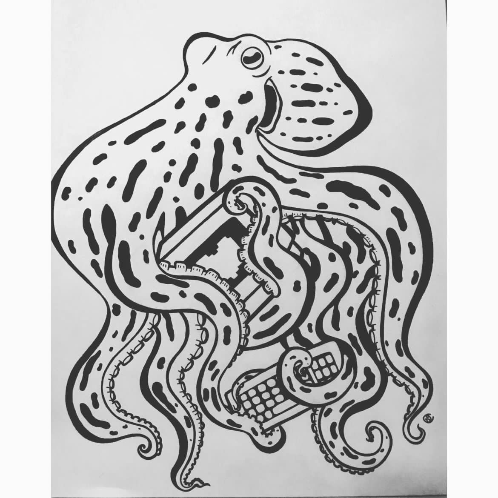
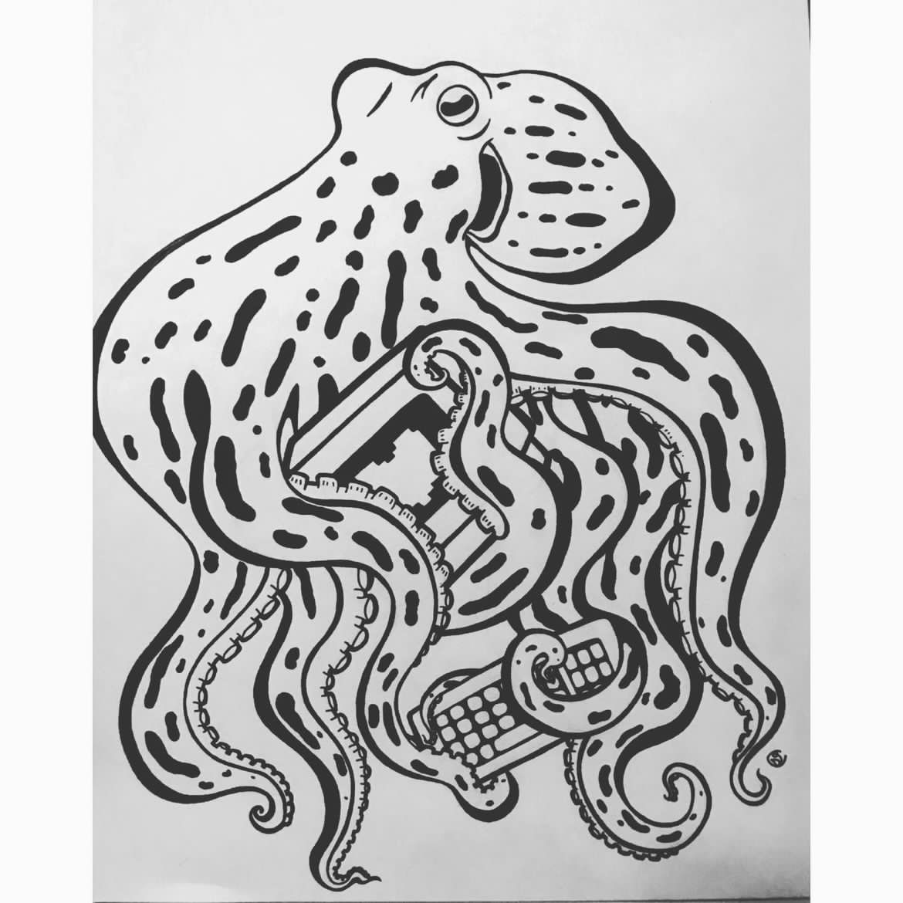

Previous Work
As a student in web development, I have completed various projects for different classes.
Below are a few examples and links to some work!
- In my Web Design II class, we were tasked with making a site that showcases alerts using Bootstrap.
- In Web Design I, I created a mock website to showcase my music and art for my final project.
- For my Interactive Design class, I created a simple jQuery animation (I also created this website for the class!)
Below you will see examples of my drawing, singing, and some photoshop work I have done!


 
